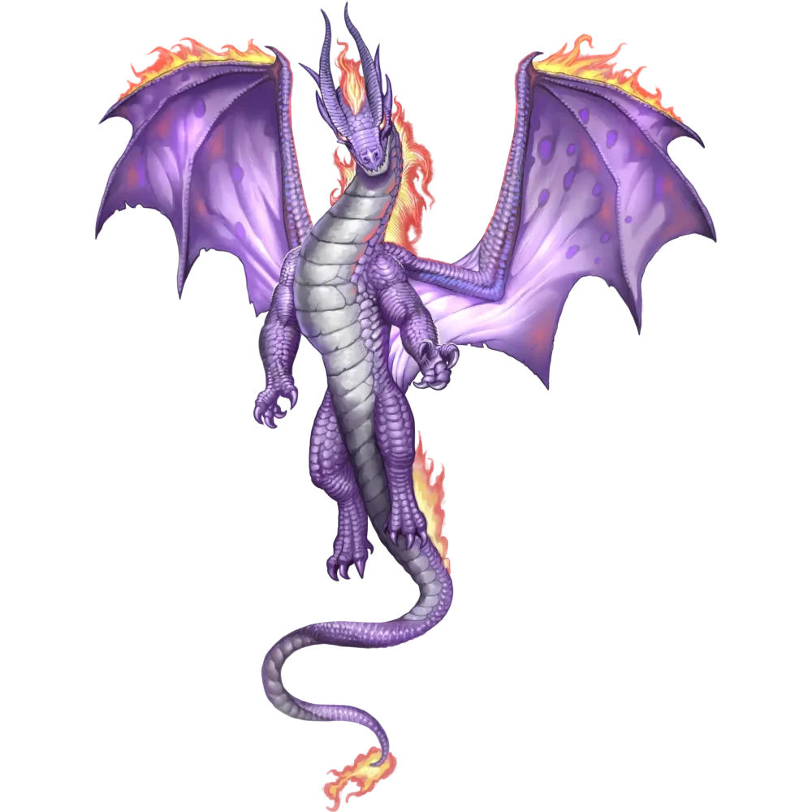
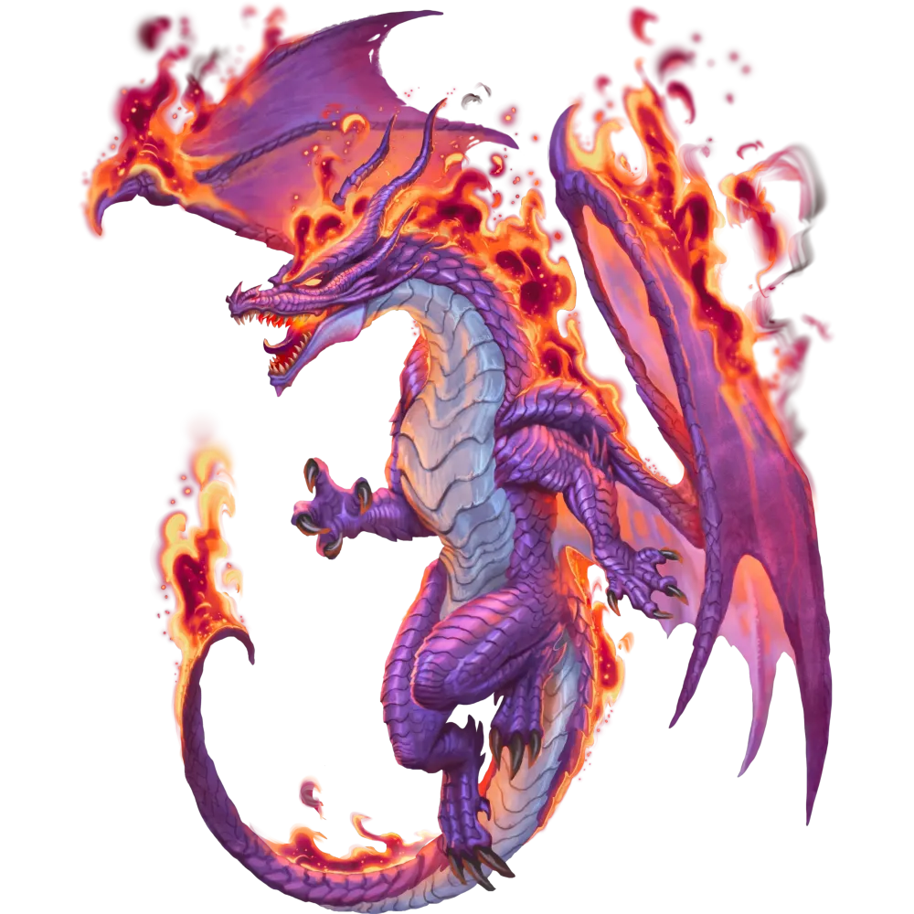

各年龄段数据卡
一头巨龙想要化作魔力之泉、成为狂野魔法浪涌的源头，所需的条件可谓千差万别且几乎无法复制；尽管具体情形因龙而异，但无一例外都罕见到了极点。其中一种成因是：一枚龙蛋在相对短暂的时间内接连沐浴了数种截然不同的魔法能量，却又恰好没有伤及蛋壳或正在蛋内孕育的幼龙。倘若巨龙父母将蛋产在狂野魔法区域，或是主动让龙蛋接受所需的多种魔法能量洗礼，便有可能发生这种异变；但无论哪种情况，这一过程对新生幼龙毫无影响的概率都远远高于成功催生出一头魔泉龙。此外，成年后的巨龙也有极其渺茫的可能通过以海量魔力狂暴轰击自身躯体，强行将自己转化为魔泉龙――然而这种做法极易引发反噬，有时会将巨龙变成亡灵怪物、扭曲异怪，甚至一旦混入其中的变形魔法比例失衡，干脆把它彻底变成另一种毫不相干的生物。而在当今时代，绝大多数魔泉龙其实都只是由魔泉龙双亲繁衍诞下的后代。 魔泉龙天生喜欢在魔力高度富集的区域内部或周边建立巢穴。它们运用这股充沛魔力筑起美轮美奂的奇幻居所，或是按照自己天马行空的想象改造现成建筑。这类家园里往往装点着繁复绚丽的彩绘玻璃窗、盘旋而下的大理石阶梯、璀璨夺目的水晶吊灯，以及其他对巨龙而言并无多少实用价值、却契合其独特审美意趣的华美陈设。同时，这些巢穴中往往还布设有精巧诡谲的魔法陷阱，能够扭曲闯入者的感官、挑动他们自相残杀，令整支冒险小队陷入崩溃与混乱，沦为任由魔泉龙或其爪牙轻松收割的猎物。魔泉龙经常在巢穴中任用构装体守卫――尤其是那些具备魔法抗性或魔法免疫的构装体，因为这类爪牙通常不会受到主人狂野魔法浪涌的波及。 布里赛恩奇许多人都会把异想天开、混乱无序的布里赛恩奇（简称“布里”）误认作某种仙灵龙或是其他来自仙境的居民。为了加固旁人的这种误解，它还特意施展变形魔法与幻术装点自身，为自己幻化出轻如蝉翼的双翅与集齐彩虹七色的斑斓龙鳞。它往往在初见某人的第一时间便对来者恶作剧一番，并将“拥有良好的幽默感”视为结交一切朋友的基本门槛。有些人或许会对这种没完没了的嬉闹感到疲惫不堪，所幸布里赛恩奇向来很少在同一个地方久留――说不定哪一刻，它就会不打招呼地翩然飞走，去别处寻觅新乐子了。 同样地，周边浓郁的魔法环境有时也会自发孕育出构成魔泉龙宝库的种种奇珍异物。魔泉龙尤为钟爱那些连它自己也有些摸不透原理、或是根本看不出任何实际用途的古怪玩意儿。在魔泉龙眼中，一顶能让佩戴者（且仅有佩戴者本人）闻到烤面包香气的帽子，远比一把单纯锋利的魔法长剑迷人得多。这类稀奇古怪的小物件其实并不像听上去那样难找，因为哪怕某天家里突然少了一件古怪衣物，大多数人也根本不会放在心上；真正的诀窍在于如何将这些奇物从凡俗杂物中甄别出来――而绝大多数魔泉龙似乎天生便具备慧眼识奇的本领。对魔泉龙而言幸运的是，在冒险者眼里，这些怪玩意儿远不如传统巨龙宝库那样值钱，因此魔泉龙也远不像其他巨龙那样频繁遭到屠龙者的骚扰。 少数魔泉龙暗怀期许，希望能在收集这些奇特珍宝的过程中，找到开启通往“万魔之源”大门的方法。它们深信世间一切魔法都源自宇宙中的某个独立维度；只要自己能够踏足彼处，便能经历一场飞升蜕变，获得无上伟力，化作魔法本身的具现化身。没人清楚这一假说究竟源于何处，但许多怀此信念的魔泉龙（在经历无数次失败尝试后）都已得出结论：常规的跨位面魔法根本无济于事。在这个小圈子里流传着一种说法：唯有将特定几件看似微不足道的小型魔法物品按玄妙规律排列组合，构筑成一座“间质超正方体”，方能将持有者传送至那处传说中的位面。 魔泉之源绝大多数魔泉龙的能力并非源自任何神明或其他异界实体的赐予，而纯粹是因某种神秘巧合导致全身浸透魔力所致。不过，凡事也并非绝对如此。在极罕见的情况下，某头魔泉龙可能是承受了某种祝福或诅咒才引发体内的魔力浪涌，又或者其魔泉之力源自某种更加离奇古怪的源头。遇到这类个体时，你不妨考虑为其换用另一张专门契合该魔泉源头风格的狂野浪涌随机表――关键在于确保表中的结果既充满奇思妙想又随机多变，且有益、中性与有害效应的比例大致均衡，正如“表格：狂野魔法”中所示。 混沌之女迪兹卡莉安有些魔泉龙毕生潜心钻研自身的狂野魔法，试图以某种方式将其驯服、驾驭或加以控制，好为自己的生活争得几分安稳，也让施法结果多一点可预测性；然而，世间最负盛名的太古魔泉龙之一，却反其道而行之，将截然相反的道路走到了极致。“混沌之女”迪兹卡莉安纵情欢愉于无序随机之中，在狂野魔法翻涌的层层波涛间翩然起舞。 得益于这种毫无保留、肆意奔放的行事风格，迪兹卡莉安自年幼起便拥有了骇人听闻的强横力量，足以轻而易举地碾碎一切挑战者；但她体内极度不稳定的魔力也让许多其他巨龙纷纷断言，这份鲁莽狂热迟早会要了她的命。毕竟，在面对占据优势的强敌时，拿不可预测的随机效应豪赌一把固然有机会爆冷翻盘，但长此以往，一旦好运耗尽，败亡几乎是板上钉钉的结局。 然而――数年、数十年，乃至数个世纪过去了――她却一直在赢。要么迪兹卡莉安拥有有史记载以来所有巨龙之中最逆天的强运，要么她掌握着某种无人知晓的独门秘密，而那秘密或许正与她全盘拥抱狂野魔法混沌本质的抉择息息相关。 魔泉珍藏由于品味兼收并蓄、不拘一格，魔泉龙的宝库里几乎不可避免地会在传统财宝之间混杂大量随机而莫名其妙的零碎物件。尽管其中绝大多数东西除了收集它们的那头魔泉龙自己之外对任何人都毫无用处，但眼光毒辣的学者仍应时刻留神――说不定就能从中淘出被世人忽略的举世孤品奇珍。 有一种假说认为，她能够向狂野魔法放声歌唱，并聆听魔力回赠的歌声；她能感知魔潮的涨落起伏，如视掌纹般看清眼前交织缠绕的万千能量丝缕。诚然，倘若她果真具备预判混沌的能力，便足以解释为何她每次全身心浸入狂野魔法、彻底将胜负托付给不可测天命时，总能立于不败之地。 然而，“她是洞悉狂野魔法一切深层奥秘的大师”这一观点，却与诸多目击者的证词相互矛盾：不少亲历者都曾亲眼看到，“混沌之女”明明也被自己引发的狂野魔法结果惊了一跳，旋即却又行云流水般利用这一突发变数占尽上风。当然，那或许只是她故作姿态的伪装――是一场延续了数个世纪的漫长骗局，旨在诱使旁观者低估她对狂野魔法的掌控与理解，从而对她掉以轻心。 不过综合现有的一切证据来看，另一种更简单的解释或许可能性要大得多。许多致力于研究迪兹卡莉安传奇生平的学者都认为，她其实是一位在突发变局中临机应变、见招拆招的绝世宗师。这一分析也顺理成章地解释了为何历经漫长岁月之后，她依然能靠着将自己笼罩在层出不穷的狂野魔法异象中无往不利：倘若该假说成立，那她正是有意借狂野魔法将所有对手逼出舒适区，制造出一场理论上无差别波及在场每一个人的混乱风暴――因为她心知肚明，唯独自己拥有在混沌乱局中瞬息适应并夺取优势的无双本领。 步入狂野魔泉龙――尤其是年深日久、经验老到的魔泉龙――掌握着数不胜数的手段来唤起并操弄狂野魔法浪涌。不过在绝大多数情况下，访客或挑战者在旅途中第一次撞上狂野魔法效应，绝不会是在与魔泉龙正面照面的那一刻。事实上，单是靠近一头年长魔泉龙的领地，其溢散的魔力便足以在周边自然催生出形形色色完全无心插柳的魔法险境，令任何不慎触发它们的人承受难以预料的狂野魔法洗礼。 如今正值力量巅峰的迪兹卡莉安终日沐浴在五花八门的狂野魔法之中，四处寻访涌动着罕见狂野魔力的魔泉圣地，只为将世间奇景尽数体验一遍。她的社交人脉出人意料地广泛，还特意花心思结识了其他令她感兴趣的魔泉龙同族，其中包括远古魔泉龙布里赛恩奇，以及同为太古魔泉龙的“隐星脉动”沃林萨拉希萨尔。她甚至还与其他几位威震天下的异类龙太古龙志同道合、往来密切，例如太古流变龙“万象形态”帕拉克西提拉斯，以及太古相位龙“永恒漫游者”奥德赛纳提斯。 至于这些站在力量顶点的太古巨龙紧闭巢穴大门之后究竟在商讨何事，至今仍是学界争论不休的话题：它们是在举办研讨会、探究催生异类龙的本源魔法浪涌，是在互通有无、交换潜在威胁与各路屠龙者的情报，抑或单纯只是志趣相投的顶尖巨龙们组建的一座私人社交俱乐部？ 隐星脉动沃林萨拉希萨尔撰文：萨凡纳・沃辛顿 与我同为学者的太古魔泉龙沃林萨拉希萨尔，深深痴迷于恒星、行星与卫星的美学意境，同时潜心钻研天文学、占星术与夜空奥秘。这份心无旁骛的执着追求，促使她将自己名为“卡利斯・沃尼斯观星塔”的塔楼巢穴整体迁入了一处袖珍异次元空间――那里悬浮着一颗较庞大的小行星，四周环绕着受她狂野魔法操控的太空碎石星环，供她安心研究超正方体之类的高维几何学。当我穿过一连串传送节点登门拜访、与她探讨我们共同的学术兴趣时，我注意到她雇佣的守卫全是由陨铁锻造而成的构装体，其中至少有一尊似乎还是精金铸就。高塔内部的陈设满满当当、略显杂乱――但这绝非源于疏于打理，反而处处透出主人显而易见的珍视与用心。她收藏着大多数魔泉龙都钟爱不已的各色奇珍异玩：我瞥见了一枚能将月光折射分解为粉红、品红与紫罗兰三色的棱镜（不过据东道主所言，它每七天才会生效一次）、一支由星光凝成且会自动将作者本意改写润色的羽毛笔，还有一套封存着璀璨流星却根本无法掷出的骰子。与我认识的其他魔泉龙相比，沃林萨拉希萨尔的鳞片色泽更接近柔和的奶油色，其上点缀着雀斑般的斑纹，会随着她体内的狂野魔法脉动闪烁出相呼应的斑斓色彩。在我印象中，她性情跳脱多变却又果断干练，既有古怪而又宽容的长辈姨母般的迷人风度，可一旦有人触怒了她，那温和表象下也潜藏着雷霆万钧的暴烈暗流。 赝品仙灵：与布里赛恩奇对谈 The Faux Fairy Conversing With Burrisaintch我还需要补充更多关于魔泉龙的资料，但在搜寻完成报告所需的最后几块拼图时，手头所有可靠的线索都已山穷水尽。于是，尽管心里颇有几分不情愿，我还是决定去寻访布里赛恩奇――一头声名狼藉的远古魔泉龙、死性不改的恶作剧狂人，同时也是仙境美学风格的狂热拥趸。 容我再强调一遍：和自诩为恶作剧大师的家伙打交道绝非易事，但眼下我也实在没多少别的选择。于是，我主动设法约见这位神出鬼没的捣蛋鬼。 幸运的是，我深知自己手握一项独特优势，几乎足以十拿九稳地促成这次当面会谈：我前不久才刚刚结束亲自深入仙境的考察之旅，并在那里结识了一大批声名显赫、举足轻重的仙灵龙。对于一个特意将自身形态改造成仙灵龙模样、自封为“精类诡术师”的家伙而言，这类奇闻轶事与仙境人脉绝对是它无论如何也无法抗拒的诱惑。 果不其然，我的预判分毫不差。当我递出橄榄枝，提出愿意用精类诸域的见闻与人脉来交换它所能告知的魔泉龙情报时，布里赛恩奇――或者照它坚持要求我称呼的那样叫它“布里”（在正式出版的书稿里我可绝不会这么写，不过在当面交谈期间我还是顺着这头远古巨龙的兴致照叫不误）――突然毫无征兆地出现在了我的书房里。 我说的“突然”可是字面意义上的突然。当时我正安坐桌前品茗，四周布置的魔法防护结界却毫无预兆地彻底失灵暴走，非但没能发挥原本的预警与防御功效，反而开始四处乱喷狂野魔法效应。平心而论，虽然这场魔法余波既恼人又多少有点危险，但至少也变相起到了警报作用；从这个角度讲，我的防护结界倒也不算彻底掉链子――总好过有不速之客潜入却浑然不觉吧。 当布里赛恩奇开始拿我耍弄恶作剧时，我早已做好了心理准备。所幸此前与春华王庭的皮克精龙达鲁迪打交道的经历让我练就了一身从容本领，得以优雅而得体地一一化解。见我展现出如此大度的幽默感，又真有实打实的精类人脉，布里赛恩奇顿时眉开眼笑，当场拍板宣布我们自此便是知己好友，并硬要我改口叫它的昵称。紧接着，一场兴高采烈、几乎连珠炮般停不下来的珍贵情报交流便由此展开――而我也意外收获了一位新朋友！ ――永光贤者卡利赞德雷克斯 |
 魔泉龙  魔泉龙 |